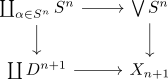
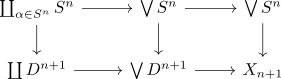
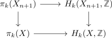
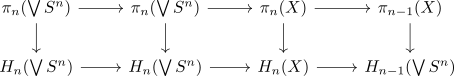

absolute Hurewicz theorem
Proposition
Let $(X, \mathcal{T})$ be a topological space, $h_{n}: \pi_n(X,x) \rightarrow H_n(X,\mathbb{Z})$ the hurewicz homomorphism
1)
Let $X$ be a connected space,
is surjective
2)
Let $X$ be an \(n-1\)-connected space with $n \geq 2$. Then the map
is an isomorphism and
is surjective
Proof
a)
b)
using CW-Approximation we may find assume that $X$ is a CW-Complex with $\mathrm{Sk}_{n-1}(X) = *$ This suffices by singular homology as homotopy invariant functor and Naturality of the Hurewicz Homomorphism
Furthermore we may assume that the $n$ skeleton is given by
n+1 skeleton of a n-1 connected cw complex homotopy equivalent to moore space wedge sphere
And there exists a pushout

using cofibration and homotopic maps induces homotopy equivalence between pushouts we get up to homotopy a factorization

where both squares are pushouts.
Hence by <homotopy pushout> we conclude that $X_{n+1}$ is given up to homotopy by $\mathrm{Cone}(f) \cong X_{n+1}$
Then

where
is an isomorphism for $k < n+1$ and surjective for $k = n+1$ (todo)
By n-th homology determined by n+1 Skeleton the right is also an iso for $k < n+1$ and surjective $k = n + 1$
Thus it suffices to prove the hurewicz theorem for
by
- surjecivity todo
- iso todo
Then by
- long exact sequence for the cone of wedge of spheres
- long exact sequence of homology for a mapping cone
we get a diagram

by TODO : homotopy and wedge <winges> - bigwedge as filtered colimit of finite wedge
- homotopy
homotopy group of a wedge of spheres
Then by the hurewicz homomorphism between spheres as isomorphism and singular homology of a wedge product of locally pointed contractible spaces